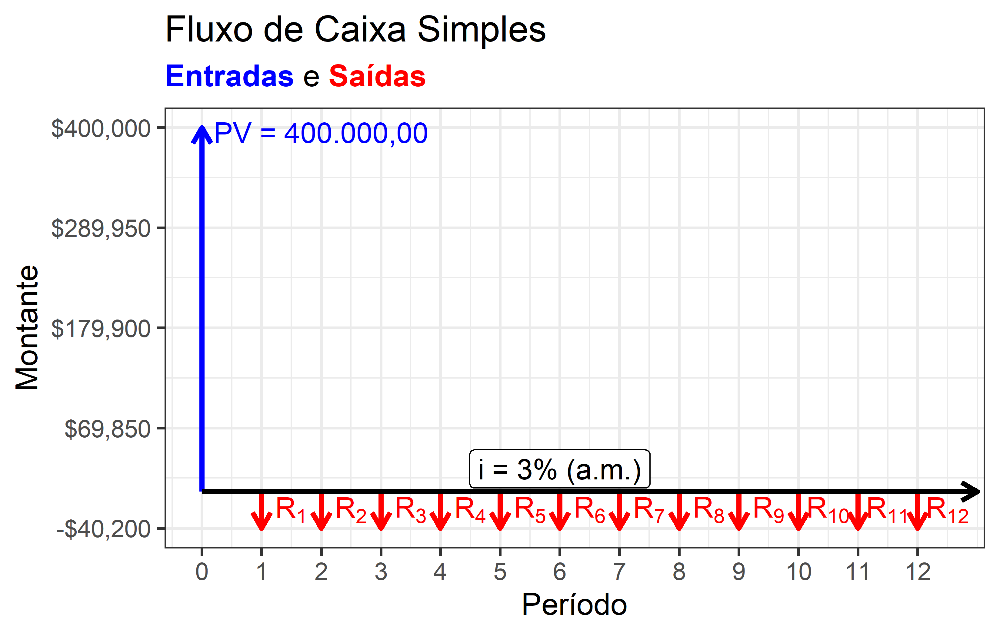
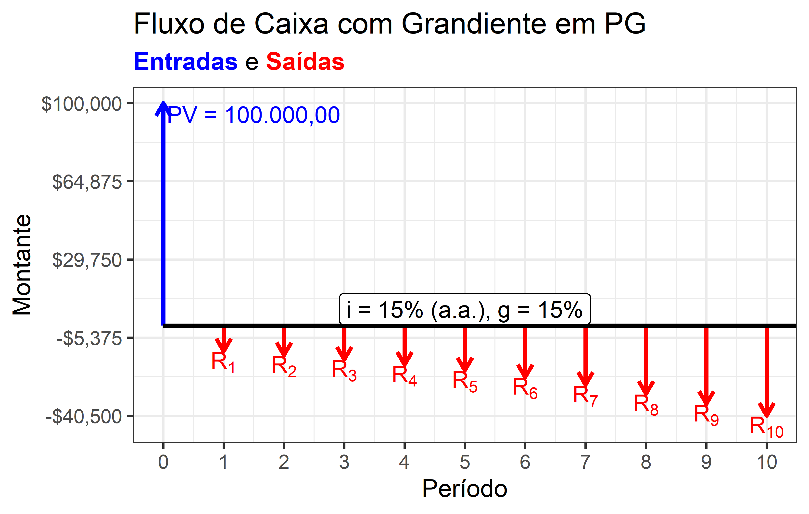

2 Matemática Financeira
A matemática financeira está na base de todos os métodos da engenharia econômica. Neste capítulo, toda a matemática financeira necessária para aplicação de dos métodos de engenharia econômica que serão tratados no Chapter 3 é detalhada aqui.
O leitor já familiarizado com os temas da matemática financeira pode seguir diretamente para o Chapter 3. Entendemos, no entanto, que mesmo o leitor mais capacitado se beneficiaria da leitura deste capítulo com fins de revisar os principais métodos e compreender melhor a nossa abordagem sobre o assunto.
2.1 Introdução
A matemática financeira contém as principais ferramentas necessárias para a realização de boas análises de investimentos. A matemática financeira é necessária para compreender a relação entre os diversos componentes de um fluxo de caixa como o da Figura 2.1.
Neste livro, procuraremos manter as coisas de forma simples. Porém, não entendemos que ao engenheiro analista de investimentos baste uma boa planilha eletrônica, com funções de matemática financeira pré-programadas. Assim, entendemos que são úteis ao engenheiro o entendimento de como as contas eram feitas antes das planilhas eletrônicas e das calculadoras financeiras, especialmente porque frequentemente vale mais uma conta aproximada que esteja correta e clara do que uma planilha eletrônica com muitas células, com um fluxo de caixa bem longo e complexo e… com um pequeno erro de programação, que invalida todos os resultados obtidos com ela. O engenheiro que se esforçar para aprender como as análises de investimento eram feitas no tempo das tábuas, certamente irá adquirir um bom senso, uma ordem de grandeza nas coisas que lhe permitirão, posteriormente, verificar os resultados de uma planilha de cálculo extensa para garantir que ela esteja correta.
2.2 Juros simples e juros compostos
O conhecimento mais básico da matemática financeira é a análise de descontos simples, ou seja, dos descontos efetuados com taxas de juros simples. Na prática, os descontos simples são utilizados no Brasil para o cômputo de dos boletos bancários que são emitidos com descontos para pagamento até uma determinada data.
Por exemplo, se um boleto com valor de R$ 1.000,00 é emitido para pagamento com desconto de 10% até o dia 05 de um determinado mês, o valor do desconto será de \(10\%\times 1.000 = \text{R\$ } 100,00\).
Além dos descontos, nos boletos bancários estão inclusos multa e juros para o pagamento por atraso. Por exemplo, caso o mesmo boleto acima não seja pago até a data do seu vencimento, poderá ser cobrado multa de 2%, além de juros de 1% a.m., proporcionais ao tempo de atraso. A multa pelo não pagamento até o vencimento, portanto, no caso do boleto de R$ 1.000,00, será de R$ 20,00. Se o pagador atrasar um dia, os juros serão de 1%/30 = 0,0333%, ou seja, R$ 0,33. Caso o pagador atrase por mais dias, basta multiplicar este valor pelo número de dias em atraso. Por exemplo, para 10 dias de atraso, os juros serão de R$ 3,33. Isto porque os juros aplicados sobre o pagamento com atraso dos boletos são juros simples. Matematicamente, os juros simples podem ser calculados de acordo com a Equação 2.1:
\[ J = C.i.t \tag{2.1}\]
No caso exemplificado, para um atraso de 10 dias, com juros de 1% a.m.:
\[ J = C.i.t = 1000.\frac{1,0\%}{30}.10 = 3,33 \]
Para os juros compostos, contudo, as coisas mudam de figura, pois os juros compostos incidem sobre os juros do período anterior, de forma que:
\[ M = C.(1+i)^t \tag{2.2}\]
Os juros compostos são mais comuns na análise de investimentos. Seja o caso, por exemplo, de computar o juro que rende uma caderneta de poupança (que remunera a uma taxa de 0,50% a.m.), durante 3 períodos, com saldo inicial de R$ 1.000,00: no primeiro mês, a caderneta irá gerar R$ 5,00 de juros. No segundo mês, a caderneta irá gerar 0,5% de retorno, assim como no primeiro mês. Porém, o saldo sobre o qual este retorno irá incidir é o saldo ao final do primeiro mês, isto é, R$ 1.005,00. Portanto, no segundo mês, a caderneta de poupança irá render R$ 5,025, e o saldo ao final do segundo mês, assim, será de R$ 1.010,025. No terceiro mês, por fim, o rendimento será de R$ 5,05 e o saldo ao final do terceiro mês será de R$ 1.015,075.
O saldo final do terceiro mês pode ser obtido diretamente através da equação 2.2:
\[ M = 1000.(1+0,5\%)^3 = 1.015,075 \]
Para curtos períodos e baixas taxas de juros, como as do exemplo, não faz muita diferença o cálculo com juros compostos ou simples. Com juros simples, o saldo final obtido para o terceiro período seria de R$ 1.015,00, uma diferença de apenas 7 centavos.
No entanto, para um prazo maior, por exemplo, de 60 meses, o saldo final da caderneta de poupança com aplicação inicial de R$ 1.000,00 será de R$ 1.348,85. Se o saldo da caderneta de poupança fosse calculado com juros simples este saldo após 60 meses seria de, apenas, R$ 1.300,00, uma diferença significativa em relação ao valor real, calculado com juros compostos.
Assim como é possível obter o montante \(M\) através de um Capital \(C\) e uma taxa de juros, também é possível saber qual o capital necessário para obter, após alguns períodos, um determinado montante, a uma taxa de juros fixa.
Suponha que um investidor tenha que honrar uma parcela com vencimento num prazo de 6 meses, de valor igual a R$ 20.000,00. Ele pretende alocar o seu capital em investimentos de mais longo prazo, mas ele precisa reservar um valor numa aplicação de mais curto prazo, que ele possa sacar daqui a 6 meses, para pagar a parcela devida. Suponha que o investidor pretenda deixar apenas o recurso necessário para o pagamento desta parcela na caderneta de poupança, qual o valor do capital que ele precisa alocar na data de hoje, para que ele tenha exatamente R$ 20.000,00 daqui a seis meses? Para isto, ele pode utilizar a Equação 2.3:
\[ C = M.\frac{1}{(1+i)^t} \tag{2.3}\]
O termo \(\frac{1}{(1+i)^t}\) é denominado Fator de Atualização do Capital (FAC), que pode ser tabelado para diversos períodos e valores de taxas de desconto (ver [Anexo I]).
Portanto, para o investidor honrar a parcela daqui a seis meses, ele precisará alocar na caderneta de poupança, hoje:
\[ C = 20.000,00.\text{FAC}(0,5\%,6) = 20.000,00\times 0,9705 = \text{R\$ }19.410,00 \]
2.3 Séries de pagamentos
Para facilitar a compreensão das análises de investimentos que iremos desenvolver no Chapter 3, assim como para as avaliações de aluguéis no Chapter 4, faz-se necessário conhecer os métodos utilizados para a análise de séries de pagamentos fixos, uma simplificação aceita muito utilizada tanto na engenharia econômica e na engenharia de avaliações.
Primeiramente, seja o caso de calcular o valor de uma prestação para pagamento de um empréstimo, a ser amortizado em parcelas fixas. Se o valor emprestado é de R$ 400.000,00 e a taxa de juros é de 3% a.m., para pagamento em 12 prestações, como obter o valor da prestação?
O problema que se apresenta pode ser escrito matematicamente da seguinte forma:
\[ C = \frac{P_1}{1+i} + \frac{P_2}{(1+i)^2} + \frac{P_3}{(1+i)^3} + \cdots + \frac{P_t}{(1+i)^t} \tag{2.4}\]
Como adimitimos que as prestações \(P_1, P_2, \ldots, P_t\) serão iguais, o lado direito da equação 2.4 torna-se (Machline 1966, 81):
\[ P = C\frac{i(1+i)^t}{(1+i)^t-1} \tag{2.5}\]
O termo \(\frac{i(1+i)^t}{(1+i)^t-1}\) é conhecido como Fator de Recuperação do Capital (FRC), ou Fator de Amortização. É um termo que, multiplicado pelo valor atual de um empréstimo (ou de um investimento), representa o valor da prestação fixa que irá trazer o capital de volta, para uma determinada taxa de juros e número de períodos pré-estabelecidos1. O FRC pode ser facilmente tabelado (ver [Anexo II]).
No exemplo, para uma taxa de juros é de 3% a.m. e 12 períodos, o Fator de Recuperação do Capital será igual a:
\[ \text{FRC} = \frac{3\%(1+3\%)^{12}}{(1+3\%)^{12}-1} = 0,1005 \]
O valor da prestação será, portanto:
\[ P = C.\text{FRC}(3\%,12) = 400.000 \times 0,1005 = \text{R\$ }40.200,00 \]
O Fluxo de Caixa final do empréstimo pode ser visto na Figura 2.1:
Assim como é possível calcular o valor de uma prestação à partir de um capital, dada uma taxa de juros e um número de períodos, é possível fazer o inverso, ou seja, à partir do valor da prestação, da taxa de juros e do número de períodos, calcular o capital atual.
Por exemplo, imagine que um cidadão com renda mensal de R$ 10.000,00, ao consultar um banco para pleitear um financiamento para a aquisição da sua casa própria no valor de R$ 500.000,00 pelo sistema price de amortização, queira saber o valor da entrada necessária, dado que apenas 30% da sua renda pode ser comprometida para o pagamento do empréstimo. Para isto, basta aplicar a equação 2.6, que traz para o valor presente uma série de pagamentos constantes a uma taxa de juros \(i\) e um número de períodos \(t\):
\[ C = P\frac{(1+i)^t-1}{i(1+i)^t} \tag{2.6}\]
O termo \(\frac{(1+i)^t-1}{i(1+i)^t}\) é conhecido como Fator de Valor Presente. É um termo que, multiplicado pelo valor de uma prestação fixa que se prolonga por um número \(t\) de períodos, a uma dada taxa de juros \(i\), irá representar o valor presente desta série de prestações.
No exemplo, se a taxa de juros é de 10% a.a. e o cidadão pretende financiar o imóvel em 360 meses, então:
\[ \text{FVP} = \frac{(1+0,80\%)^{360}-1}{0,80\%(1+0,80\%)^{360}} = 117,90 \]
Assim, uma série de pagamentos de 360 parcelas fixas de R$ 3.000,00 terá valor presente igual a:
\[ C = P.\text{FVP}(0,80\%,360) = 3.000 \times 117,90 = \text{R\$ } 353.700,00 \]
Como o preço atual da casa é de R$ 500.000,00, o cidadão terá que desembolsar à vista o valor de R$ 146.300,00 para a aquisição da casa.
Os valores de FRC e FVP podem ser tabelados para diferentes taxas de juros e números de períodos, como podem ser vistas no [Anexo I]. Estas tabelas facilitam o cálculo das prestações e capitais atuais.
As tabelas auxiliam a encontrar as taxas de juros, que não tem cálculo trivial, quando são conhecidos o valor presente e as prestações.
O parcelado “sem juros” da economia brasileira
É muito comum o parcelamento de compras na economia brasileira. É muito frequente que os anúncios digam que uma compra pode ser parcelada em 10 ou 12 prestações sem juros (12x sem juros).
Por exemplo, pode-se comprar uma geladeira em 10x de R$ 400,00, “sem juros”. Porém, as lojas também dão a opção de comprar com “desconto” de 5% no PIX, ou seja, no PIX, com “desconto”, o preço é de R$ 3.800,00.
Vamos calcular a taxa de juros embutida neste parcelamento, utilizando a Equação 2.6 e as tabelas do [Anexo III]:
\[ \begin{aligned} \begin{split} C &= P.\text{FVP}(i\%, t) \\ 3.800 &= 400.\text{FVP}(i\%, 10) \\ \text{FVP}(i\%, 10) &= 9,50 \\ \end{split} \end{aligned} \] Encontrado o valor de FVP para o período de 12 meses (9,50), basta procurar na tabela do [Anexo III] o valor mais próximo deste. Pesquisando na Tabela 1, na linha de 10 períodos, encontramos o valor 9,497 (muito próximo) na coluna da taxa igual a 0,95% a.m., o que equivale a uma taxa anual de 12% a.a.
Quanto maior o “desconto” no PIX, maior a taxa, naturalmente. Veja este exemplo: um smartphone anunciado por R$ 2.998,89, que pode ser parcelado “sem juros” em 10 parcelas de 299,89, porém pode também ser pago via PIX por R$ 2.699,00, um “desconto” de 10%. Vamos calcular os juros embutidos:
\[ \begin{aligned} \begin{split} C &= P.\text{FVP}(i\%, t) \\ 2.699,00 &= 299,89.\text{FVP}(i\%, 10) \\ \text{FVP}(i\%, 10) &= 9,0 \\ \end{split} \end{aligned} \] Pesquisando na Tabela 1, na linha de 10 períodos, encontra-se que a taxa de juros é um pouco menor do que 2% a.m., o equivalente a uma taxa de juros anual de 26,82% a.a.!!!
2.3.1 Fundo de Amortização
Fundo de Amortização ou Montante de uma série de prestações, é o valor total futuro (ou montante) que uma série de prestações produz, ao final do período, na vigência de uma determinada taxa de juros.
Para pagamentos realizados sempre no final de cada período, o montante pode ser calculado assim (notar que a última prestação não produz juros, porque é feita no final do período):
\[ M = P_{1}(1+i)^{n-1}+P_{2}(1+i)^{n-2} + \ldots + P_{n-2}(1+i)^{2}+P_{n-1}(1+i) + P_n \]
Se o valor das prestações \(P_1, P_2, \ldots, P_n\) são todos iguais a \(P\), então:
\[ M = P\frac{(1+i)^t-1}{i} \tag{2.7}\]
O termo \(\frac{(1+i)^t-1}{i}\) é denominado Fator de Acumulação Composta (FAcC). Estes valores encontram-se tabelados para diversos números de períodos e taxas de juros no [Anexo IV]. Esta Equação 2.7 é utilizada para descobrir qual o capital acumulado após um determinado número de aplicações periódicas uniformes em um investimento com rentabilidade pré-fixada, como a caderneta de poupança. Por exemplo, seja o caso de um cidadão pretender depositar R$ 5.000,00 na sua caderneta de poupança mensalmente, durante um período de 24 meses. Qual será o seu saldo ao final do período?
\[ \begin{aligned} \begin{split} M &= P.\text{FAcC}(0,50\%, 24) \\ M &= 5.000,00 \times 25,43 M &= 127.159,80 \end{split} \end{aligned} \]
A operação inversa consiste em procurar o valor da parcela periódica necessária para a obtenção de um determinado montante no futuro, dada uma taxa de juros e um número fixo de períodos. Isto pode ser feito com a utilização da Equação 2.8:
\[ P = M\frac{i}{(1+i)^t-1} \tag{2.8}\]
O termo \(\frac{i}{(1+i)^t-1}\) é denominado Fator de Fundo de Amortização (FFA). Este fator encontra-se tabelado no [Anexo V].
Seja o caso de saber qual o valor da prestação para que o mutuário consiga juntar R$ 146.300,00 (valor da entrada para compra do imóvel) ao aplicar mensalmente esta prestação em uma caderneta de poupança, durante 24 meses?
\[ \begin{aligned} \begin{split} P &= M.\text{FFA}(0,5\%, 24) \\ P &= 146.300 \times 0,0393 \\ P &\approx 5.750,00 \end{split} \end{aligned} \]
Fixada a taxa de juros e o valor da prestação, pode-se proceder de maneira a encontrar o número de períodos necessário para se juntar um determinado montante. Para isto, basta calcular o valor do FFA necessário e pesquisá-lo na tabela do [Anexo V] na coluna correspondente à taxa de juros da aplicação. Por exemplo, se o mutuário apenas consegue juntar R$ 3.000,00 ao mês, com a taxa de juros de 0,5% a.m., tem-se, de acordo com a Equação 2.8:
\[ 3.000 = 146.300.\text{FFA}(0,5\%,t) \Rightarrow \text{FFA}(0,50\%, t) = 0,0205 \]
Pesquisando na tábua do FFA [Anexo V], encontra-se que o mutuário teria que juntar R$ 3.000,00 durante \(t = 44\) meses para obter o montante necessário para dar a entrada necessária no imóvel.
Poupando para a aposentadoria
Imagine que um jovem de 20 anos de idade esteja iniciando sua carreira na área de Engenharia e pretenda, desde muito cedo, planejar a sua aposentadoria. Ele abre então uma caderneta de poupança onde pretende depositar mensalmente a quantia fixa de R$ 500,00. Caso o engenheiro seja fiel à sua estratégia, com 65 anos, qual o montante que o engenheiro acumulará na caderneta de poupança ao longo da sua vida laboral? Desconsidere os efeitos da inflação.
\[ \begin{aligned} \begin{split} M &= P\frac{(1+i)^t-1}{i} \\ M &= 500.\text{FAcC}(0,5\%, 45\times12) = 500.\text{FAcC}(0,5\%, 540)\\ M &= 500\times2.756\\ M &= \text{R\$ }1.378.000 \end{split} \end{aligned} \]
Suponha agora o jovem pretenda ter uma renda de R$ 10.000,00/mensais depois que se aposentar. Por quanto tempo o engenheiro poderá usufruir desta renda mensal com o montante acumulado? Lembrar que o saldo continua rendendo juros, mesmo com as retiradas mensais, porém sobre um valor cada vez menor.
\[ \begin{aligned} \begin{split} C &= P\frac{(1+i)^t-1}{i(1+i)^t} \\ 1.378.000 &= 10.000,00.\text{FVP}(0,5\%, n) \\ \text{FVP}(0,5\%, n) &= 137,80 \Leftrightarrow n = 234 \end{split} \end{aligned} \]
É interessante observar o efeitos dos juros compostos. No período de acumulação, se não houvesse incidência de juros, o montante acumulado seria de, apenas, R$ 270.000,00. (\(500\times 540\)). Os juros compostos é que foram responsáveis, durante todo o período, em levar o capital que seria de R$ 270.000,00 para R$ 1.378.000,00.
Já no período de utilização do capital acumulado, ou seja, durante a aposentadoria, se não existisse a incidência de juros sobre o saldo remanescente, o capital seria suficiente para remunerar o aposentado por apenas 137 meses. Como os juros incidem sobre o saldo remanescente em cada período, o capital remunera o aposentado à quantia desejada por 234 meses.
2.4 Séries Gradientes Uniformes
As séries gradientes uniformes são séries cujos valores das prestações variam no tempo de acordo com uma regra, como a progressão aritmética (PA) ou a progressão geométrica (PG). As séries gradientes podem ser crescentes ou decrescentes i.e. elas podem ter prestações que aumentam com o tempo, ou que diminuem com o tempo.
2.4.1 Séries Gradientes em PA
Como dito anteriormente, as séries gradientes em PA podem ser crescentes ou decrescentes. A princípio não adequado que financiamentos sejam feitos à prestações crescentes. Em geral, quando as prestações de um financiamento não são iguais, elas são decrescentes. Porém, pode-se imaginar situações onde prestações inicialmente menores são desejáveis, como veremos. Mais natural, contudo, é que as séries crescentes estejam relacionadas à aplicações financeiras.
2.4.1.1 Séries Crescentes em PA
O tratamento das séries gradientes uniformes crescentes em PA são tratadas de acordo com a Equação 2.9.
\[ PV = \frac{1}{i(1+i)^t} \left [ A[(i+1)^t-1] + G \left ( \frac{(1+i)^t-1}{i} - t \right )\right] \tag{2.9}\]
Em que \(A\) é a renda-base e \(G\) é o gradiente da série.
É usual que os pagamentos da séria sejam divididos em dois componentes, um básico e constante igual a \(A\) e outro aritmeticamente crescente, com razão \(G\).
A parte do PV correspondente à renda-base é calculada conforme a Equação 2.10:
\[ \frac{P}{A} = \frac{(1+i)^t-1}{i(1+i)^t} = \text{FVP}(i\%,t) \tag{2.10}\]
E a parte do PV correspondente ao gradiente é calculada conforme a Equação 2.11
\[ \frac{P}{G} = \frac{(1+i)^t-i.n-1}{i^2(1+i)^t} \tag{2.11}\]
Para melhor compreender, vamos utilizar um exemplo: imagine que você precisa de um financiamento de R$ 90.000,00 para iniciar a sua atividade empresarial. Você procura uma instituição financeira que lhe possibilite o pagamento deste empréstimo em 10 parcelas anuais. Quando você chega à instituição, no entanto, o gerente PJ da instituição argumenta que, como você ainda irá começar as suas atividades de negócios, você precisa de um alívio inicial, então ele lhe propõe um financiamento com 2 anos de carência, i.e., dois anos para começar a pagar o empréstimo, em parcelas anuais. Além da carência de dois anos, a instituição financeira ainda te oferece uma condição especial para facilitar o pagamento das primeiras parcelas: você pode começar a pagar o empréstimo depois de 2 anos em 9 prestações crescentes com o tempo. Como você tem dúvidas a respeito de quanto tempo o seu negócio irá demorar a engrenar, você está inclinado a aceitar esta condição, ou seja, aceitar que as prestações aumentem com o tempo, pois você terá prestações mais baixas a honrar durante os primeiros anos. Considerando que a taxa de juros do financiamento é de 5,80% a.a., calcule o valor das prestações do financiamento. Calcule também o valor da prestação constante equivalente, ou seja, o valor da prestação caso o empréstimo fosse ser pago sem carência e em prestações iguais, como de costume.
O cálculo do valor das prestações pode ser feito com as equações 2.10 e 2.11. Considerando-se que não haverá o pagamento da primeira prestação do empréstimo, que depois terá prestações crescentes, então \(A = 0\). O valor de \(G\) é o que queremos calcular. Para isto, precisamos apenas da Equação 2.11:
\[ \begin{aligned} \begin{split} \frac{P}{G} &= \frac{(1+5,80\%)^{10}-5,80\%.10-1}{5,80\%^2(1+5,80\%)^{10}} \\ \frac{90.000,00}{G} &= \frac{0,17734}{0,00591} \\ \frac{90.000,00}{G} &= 30 \Rightarrow G = 3.000,00 \end{split} \end{aligned} \]
Temos portanto que as prestações irão crescer a uma razão de R$ 3.000,00 por ano, à partir do ano 2.
O fluxo de caixa deste financiamento pode ser visto na Figura Figura 2.2

Os valores de \(R_1\) à \(R_9\) serão iguais a \(1G, 2G, 3G, \ldots, 9G\), ou seja, ] \(3.000, 6.000, 9.000, \ldots, 27.000\).
O valor da prestação equivalente uniforme pode ser calculado de acordo com a Equação 2.12:
\[ P_{equivalente} = G.\left ( \frac{1}{i}-\frac{t}{(1+i)^t-1} \right) \tag{2.12}\]
O termo \(\left ( \frac{1}{i}-\frac{t}{(1+i)^t-1} \right)\) é chamado de fator de série gradiente uniforme (GUS) e pode ser tabelado. Para o exemplo:
\[ \begin{aligned} \begin{split} \text{GUS}(5,80\%, 10) &= \left ( \frac{1}{5,80\%}-\frac{10}{(1+5,80\%)^{10}-1} \right) = 4,037\\ P_{equivalente} &= 3.000,00.\text{GUS}(5,80\%, 10) \\ P_{equivalente} &= 3.000 \times 4,037 \\ P_{equivalente} &= 12.112,00 \end{split} \end{aligned} \]
Em suma, o empresário teria que começar a pagar o empréstimo depois de apenas 1 ano, com valor de R$ 12.112,00 anuais. Porém, as prestações crescentes no tempo lhe permitem um bom alívio durantes os anos de estruturação do seu negócio.
2.4.1.2 Séries Decrescentes em PA
As séries gradientes decrescentes em PA podem ter um tratamento mais fácil do que as séries de pagamentos crescentes em situações particulares. Inicialmente, é preciso esclarecer que as séries gradientes decrescentes em PA podem ser tratadas com a Equação 2.9 apenas fazendo uso de um valor negativo de G. Porém, é mais comum tratarmos as séries gradientes uniformes decrescentes de acordo com a Equação 2.13, que é válida quando a última prestação tem valor \(G\) e as outras prestações são um múltiplo deste último pagamento:
\[ PV = \frac{G}{i(1+i)^t} \left [ t(1+i)^t - \left ( \frac{(1+i)^t-1}{i} \right ) \right ] \tag{2.13}\]
É importante observar que, assim, a série gradiente decrescente depende apenas de \(G\) e não depende de uma renda-base \(A\), como a série gradiente uniforme crescente.
As séries gradientes uniformes decrescentes são muito utilizadas nas finanças pois podem ser usadas para o cômputo de prestações decrescentes no tempo, como no caso dos financiamentos habitacionais realizados através do sistema de amortizações constantes (SAC).
Exemplo do Cálculo de tabela SAC com séries gradientes uniformes
Uma família, buscando realizar o sonho da casa própria, pretende comprar uma casa com valor de R$ 500.000,00. Com muito suor, eles conseguiram poupar R$ 100.000,00 (20%) para a entrada, exigida pela instituição financeira. Eles pretendem financiar os R$ 400.000,00 restantes em 360 meses. A taxa de juros divulgada pela instituição é de 12% a.a., válida para financimentos contratados pelo sistema de amortizações constantes (SAC), em que a primeira parcela é mais alta e depois decresce linearmente com o tempo. Neste tipo de financiamento, o mutário paga um valor fixo (a amortização constante, que dá nome ao sistema), que é igual ao valor financiado dividido pelo prazo do financiamento (no caso, \(400.000,00 / 360 = \text{R\$ }1.111,11\)), mais uma prestação variável no tempo, que incide sobre o saldo devedor de cada período. Calcule o valor da última e da primeira prestação. Calcule o valor presente dos juros pagos ao longo do contrato. Calcule o valor da prestação uniforme equivalente, ou seja, o valor da prestação que teria lugar caso as parcelas fossem constantes.
A última prestação, por definição, será igual a R$ 1.111,11, valor da amortização mensal, que estará presente em todas as parcelas do financiamento, mais o juro correspondente ao financiamento destes R$ 1.111,11 por 1 período (o período que vai do final do penúltimo mês do financiamento, até o último dia do último mês do financiamento), ou seja, \(1.111,11.(1+12\%)^{1/12} = \text{R\$ }10,54\). Assim, a última prestação terá valor igual a R$ 1.121,65 (\(1.111,11+10,54\)).
O valor da última prestação, como estamos no SAC, é igual a \(1.111,11 + 360.10,54 = 1.111,11 + 3.795,52 = 4.906,63\).
O valor presente dos juros pagos ao longo do contrato é calculado de acordo com a Equação 2.13, com \(G=10,54\), \(i=(1+12\%)^{1/12} = 0,95\%\) a.m., e \(t = 360\):
\[ \begin{aligned} \begin{split} PV &= \frac{10,54}{0,95\%(1+0,95\%)^{360}} \left [ 360(1+0,95\%)^{360} - \left ( \frac{(1+0,95\%)^{360}-1}{0,95\%} \right ) \right ] \\ PV &= 36,88(10.828,76 - 3.061,04) \\ PV &= 286.473,50 \end{split} \end{aligned} \]
Assim como no exemplo anterior, pode-se calcular a prestação uniforme equivalente referente aos juros pagos ao longo do contrato. No entanto, como temos o valor presente dos juros, basta utilizar a Equação 2.5 para calcular, baseado na taxa de juros e no número de prestações, o valor da prestação:
\[ \begin{aligned} \begin{split} \text{FRC}(0,95\%, 360) &= 0,0098 \\ P_{equivalente} &= C.\text{FRC}(0,95\%, 360) \\ P_{equivalente} &= 286.473,50 \times 0,0098 \\ P_{equivalente} &= 2.815,08 \end{split} \end{aligned} \]
A prestação pelo sistema Price, portanto, seria igual a R$ 3.926,19 (\(2.815.08+1.111,11\)). É fácil mostrar que o valor presente desta prestação fixa é igual ao valor financiado:
\[ \begin{aligned} \begin{split} C &= P.\text{FVP}(i\%, t) \\ C &= 3.926,19.\text{FVP}(0,95\%,360) \\ C &= 3.926,19\times101,764 \\ C &\approx 400.000,00 \end{split} \end{aligned} \]
2.4.2 Séries Gradientes Uniformes em PG
As séries gradientes uniformes em PG são séries cuja regra de crescimento é feita por um fator multiplicativo (\(g\)) e não aditivo, como nas séries em PA. O valor presente de uma série gradiente com primeiro pagamento \(A_1\) e crescimento (ou decrescimento) a uma taxa constante \(g\) pode ser calculado de acordo com a equação Equação 2.14:
\[ PV = \frac{A_1}{(1+i)^t} \left[ \frac{g^t-(1+i)^t}{g-(1+i)} \right] \tag{2.14}\]
O Diagrama de um Fluxo de Caixa de uma série de pagamentos com crescimento em PG tem a forma da Figura 2.3

Em que as prestações \(R_1, R_2, R_3, \ldots, R_t\) assumirão valores \(A_1, A_1(1+g), A_1(1+g)^2, \ldots, A_1(1+g)^{t-1}\).
Existem na literatura dois fatores que tornam o tratamento destes tipos de séries mais agradável. O primeiro, que é aplicável quando o valor da taxa \(i\) é diferente do valor da taxa de crescimento \(g\), que é equivalente à Equação 2.14:
\[ PV = A_1\left [ \frac{1-\left( \frac{1+g}{1+i}\right )^t}{i-g}\right] \tag{2.15}\]
E o segundo, que é aplicável nos casos em que \(g = i\):
\[ PV = \frac{nA_1}{1+i} \tag{2.16}\]
É fácil veriicar que, quando \(t\) aumenta, se \(g<i\), então o termo \([(1+g)/(1+i)]^t\) tende a zero e a Equação 2.15 torna-se:
\[ PV = A_1\left [ \frac{1-0}{i-g}\right] = \frac{A_1}{i-g} \qquad \text{se } i>g \text{ e t é grande} \]
A taxa obtida através da subtração de \(g\) de \(i\) é chamada de taxa de capitalização (\(c\)).
Exemplo do utilização de séries gradientes uniformes em PG
Um industrial procura um empréstimo para adquirir um novo equipamento para a sua indústria já consolidada. O novo equipamento irá subsituir um equipamento ainda em produção, porém já obsoleto. Assim, o seu faturamento líquido com os produtos produzidos com este equipamento tenderá a se manter constante, com valor igual a R$ 300.000,00/ano. Porém, o seu custo de manutenção tende a diminuir com o novo equipamento, o que garante o retorno do seu investimento. O problema é que o novo equipamento custa R$ 1.200.000,00 e o empresário não dispõe deste montante para realizar o investimento. Então o empresário procura um banco de desenvolvimento e mostra toda a viabilidade do seu investimento na troca do equipamento em produção. O gerento do banco, então, lhe apresenta a seguinte proposta: uma linha de financiamento de 5 anos, em que no final de cada ano você irá pagar um quinto do principal (\(1.200.000,00/5 = 240.000\)) mais uma taxa de juros referente a este valor amortizado em cada período. Em outras palavras, em cada anuidade, você irá quitar 1/5 do valor emprestado, mais os juros referentes a este 1/5 de capital quitado calculado para aquele período. As taxas de juros são de 4,2% a.a. Calcule o valor das prestações do primeiro ao quinto ano e verifique se, apenas o faturamento líquido obtido com o próprio equipamento, o empresário é capaz de honrar com as prestações.
Como as prestações irão crescer apenas na magnitude dos juros cobrados, então o valor da primeira parcela pode ser calculado de acordo com a Equação 2.16:
\[ \begin{aligned} \begin{split} 1.200.000 &= \frac{5A_1}{1+4,2\%}\\ A_1 &= \frac{1.200.000 \times 1,042}{5} \\ A_1 &= 250.080,00 \end{split} \end{aligned} \]
O valor das parcelas \(A_2\) à \(A_5\) serão calculadas de acordo com um fator de crescimento \(g = 4,2\%\):
\[ \begin{aligned} \begin{split} A_2 &= 250.080 \times (1+4,2\%) = 260.583,36 \\ A_3 &= 250.080 \times (1+4,2\%)^2 = 271.527,86 \\ A_4 &= 250.080 \times (1+4,2\%)^3 = 282.932,03 \\ A_5 &= 250.080 \times (1+4,2\%)^4 = 294.815,18 \end{split} \end{aligned} \]
Com o faturamento líquido atual de R$ 300.000,00/ano o empresário já seria capaz de honrar as prestações apenas com faturamento oriundo do funcionamento do próprio equipamento. Como o empresário deverá ainda ter um menor custo de manutenção com o equipamento, o seu faturamento líquido com ele deverá ainda aumentar, o que irá facilitar ainda mais o pagamento das parcelas anuais.
O exemplo acima ilustra bem como seria vantajoso optar por um empréstimo com pagamentos em séries gradientes uniformes em PG com \(i=g\), visando substituir um equipamento existente por um outro novo, com menores custos de manutenção. Não há desequilíbrios de caixa, pois o próprio faturamento é capaz de pagar pelas prestações do financiamento.
Um segundo tipo de problema é o que decorre de uma ampliação, ou da compra de um segundo equipamento, que terá o efeito de ampliar a produção. Com a compra do novo equipamento, idêntico a um já existente, seria possível dobrar a produção. A demanda, porém, pode não ser suficiente para absorver toda a produção de imediato. O segundo exemplo, portanto, irá considerar que há um crescimento gradual da demanda, e por isso o ideal é que as condições de pagamento do financiamento sejam adequadas a este cenário.
Séries gradientes uniformes em PG: quando utilizar \(g \neq i\)
Um empresário pretende ampliar a sua produção atual com a aquisição de um novo equipamento. No entanto, o empresário entende que o aumento da sua produção deverá acompanhar o aumento da sua demanda anual. Dado que com o equipamento atual ele fatura líquidos R$ 500.000,00/ano, ele entende que com os dois equipamentos em produção ele poderá vir a faturar até R$ 1.000.000,00/ano, o que deverá ocorrer num prazo de 4 anos, ou seja, ele estima um crescimento anual nas vendas de 100% em 4 anos, uma taxa de aumento nas vendas de \((1+100\%)^{1/4} \approx 18,92\% a.a.\)). Ele precisa, portanto, de um financiamento com prestações iniciais mais baixas, porque o faturamento projetado à partir da aquisição será: no primerio ano, igual a , ou seja, um adicional de 94.603,50 em relação ao faturamento atual; n\(500.000\times(1+18,92\%) = 594.603,50\)o segundo ano, igual a \(500.000\times(1+18,92\%)^2 = 707.106,64\), ou seja, 207.106,64 adicionais; no terceiro ano, \(500.000\times(1+18,92\%)^3 = 840.896,17\), ou seja, 340.896,17 adicionais; e, finalmente, após o 4º da aquisição, \(500.000\times(1+18,92\%)^4 = 1.000.000,00\), ou seja, 500.000,00 adicionais. Ao procurar um banco de desenvolvimento, ele se deparou com a seguinte oportunidade de financiamento: taxas de juros de 3,0 % a.a., com pagamento em 4 anos, com flexibilidade nas parcelas (o empresário escolhe como quer pagar, desde que quite o financiamento num prazo de 4 anos). Dado que o novo equipamento tem custo de aquisição de R$ 1.000.000,00, como o empresário poderia pagar por este financiamento, de maneira a utilizar apenas o faturamento líquido adicional projetado devido à aquisição da nova máquina? Calcular o valor de todas as parcelas e compará-las com o faturamento adicional líquido.
O empresário pode utilizar a Equação 2.15 para buscar um valor de \(g\) que lhe possibilite encontrar uma valor da prestação inicial \(A_1\) que seja igual ou inferior ao faturamento líquido adicional do primeiro ano, ou seja, R$ 94.603,50.
\[ \begin{aligned} \begin{split} PV &= A_1\left [ \frac{1-\left( \frac{1+g}{1+i}\right )^t}{i-g}\right] \\ 1.000.000,00 &= 94.603,50 \left [ \frac{1-\left( \frac{1+g}{1+3,00\%}\right )^t}{3,00\%-g}\right] \\ g &\approx 80\% \end{split} \end{aligned} \]
Portanto, para obter uma parcela inicial de valor menor ou igual ao faturamento líquido adicional projetado, o empresário terá que arcar com aumento das parcelas do financiamento em 80% a cada ano.
Os valores das parcelas \(A_1\) à \(A_5\) serão iguais a:
\[ \begin{aligned} \begin{split} A_1 &= P.\left [ \frac{3,0\%-80\%}{1-\left( \frac{1+80\%}{1+3,0\%}\right )^t}\right] = 92.470,48 \\ A_2 &= A_1(1+g) = 92.470,48.(1+60\%) = 166.446,87\\ A_3 &= A_1(1+g)^2 = 92.470,48.(1+80\%)^2 = 299.604,36\\ A_4 &= A_1(1+g)^3 = 92.470,48.(1+80\%)^3 = 539.287,85 \end{split} \end{aligned} \]
Como o faturamento líquido adicional projetado é superior ao valor das parcelas ano a ano, exceto pelo valor da última parcela, que é levemento superior ao do faturamento adicional projetado, o empréstimo está bem equalizado. Este valor um pouco superior da última parcela não é preocupante haja vista que há gordura nos anos anteriores no faturamento adicional em relação ao valor das parcelas pagas.
Pode-se verificar com a Equação 2.15 que o fluxo de pagamento corresponde ao valor presente do investimento:
\[ \begin{aligned} \begin{split} PV &= A_1 \left [ \frac{1-\left( \frac{1+g}{1+i}\right )^t}{i-g}\right] \\ PV &= 92.470,48 \left [ \frac{1-\left( \frac{1+80\%}{1+3,0\%}\right )^4}{3,0\%-80\%}\right] \\ PV &= 92.470,48 \times 10,8143 \\ PV &= 1.000.000,00 \end{split} \end{aligned} \]
O fator de amortização, ou fator de recuperação do capital é utilizado no conhecido Sistema Price de Amortização, ou Sistema Francês de Amortização (Tabela Price).↩︎